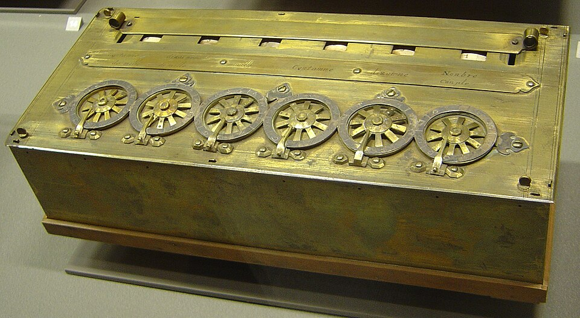
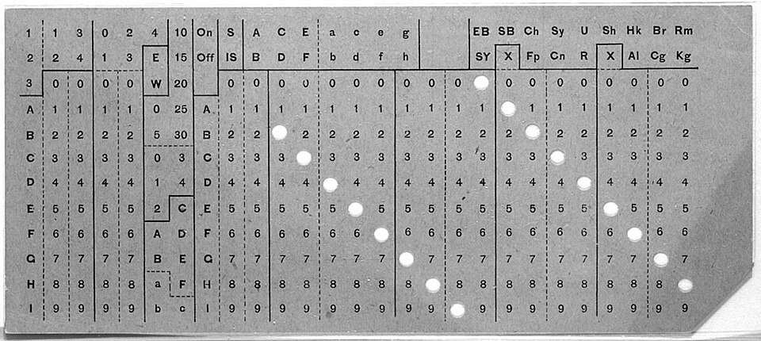
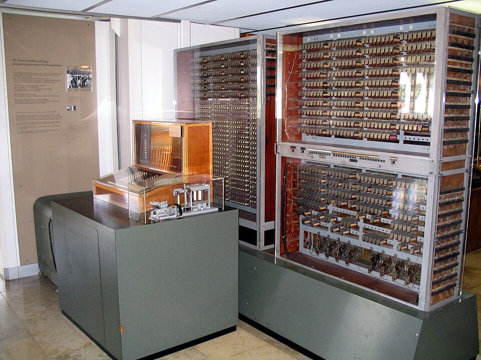

tjuusitalo
tjuusitalo
Good morning!
Nur das Schöne wird die Welt retten!
Fjodor Dostojewski
Nicht verzagen, Doc Alvers fragen!
Informatik — Grundkurs 11
Historische Meilensteine
Von Abakus und Rechenuhr über Zuse bis zum Mikroprozessor
Nicht verzagen, Doc Alvers fragen!
Kapitel 01
Rechnen mit Kugeln und Zahnrädern
Rechenhilfsmittel und mechanische Rechenmaschinen

Nicht verzagen, Doc Alvers fragen!
Wo wir stehen
Letzte Woche: Informatik als Medium anderer Wissenschaften
Heute der Blick zurück: Woher kommen die Rechner, mit denen alle Fächer arbeiten?
Mit dieser Stunde schließen wir Lernbereich 1 ab
Leitfrage: Was musste erfunden werden, bis eine Maschine selbst rechnet — und sich programmieren lässt?
Nicht verzagen, Doc Alvers fragen!
Hilfsmittel oder Maschine?
Rechenhilfsmittel
Abakus, Rechentafel, Rechenschieber
Der Mensch führt jeden Rechenschritt aus
Das Hilfsmittel hält nur Zwischenstände fest
Tempo hängt an der Übung
Rechenmaschine
Rechenuhr, Pascaline, Staffelwalze
Die Maschine führt den Rechenschritt selbst aus
Der Mensch stellt nur Zahlen ein
Der Übertrag läuft mechanisch
Nicht verzagen, Doc Alvers fragen!
Der Abakus: Speicher zum Anfassen
Seit Jahrtausenden im Einsatz — in Mesopotamien, Rom, China, Japan, Russland
Die Kugeln speichern das Zwischenergebnis sichtbar — Rechnen ganz ohne Schrift
Geübte rechnen damit so schnell, dass 1946 ein Abakus einen elektrischen Rechner im Wettrechnen schlug
Um 1620 kommt der Rechenschieber: Multiplizieren über Logarithmen
Bis in die 1970er Jahre das Werkzeug der Ingenieure — dann verdrängt vom Taschenrechner
Nicht verzagen, Doc Alvers fragen!
Die ersten Rechenmaschinen
| Jahr | Wer | Maschine | Was war neu? |
|---|---|---|---|
| 1623 | Wilhelm Schickard | Rechenuhr | Addieren und Subtrahieren mit Zehnerübertrag |
| 1642 | Blaise Pascal | Pascaline | Addiermaschine für die Steuerarbeit des Vaters |
| 1673 | Gottfried Wilhelm Leibniz | Staffelwalze | alle vier Grundrechenarten |
Der schwierige Teil ist der Zehnerübertrag — Schickard löste ihn mit einem Zahnrad mit einem einzigen Zahn
Leibniz beschrieb außerdem das Dualsystem mit 0 und 1 — die Sprache heutiger Rechner
Programmierbar war keine dieser Maschinen: Sie rechneten nur, was man einstellte
Nicht verzagen, Doc Alvers fragen!
Kapitel 02
Programme auf Papier
Lochkarte, Babbage, Lovelace, Hollerith

Nicht verzagen, Doc Alvers fragen!
Die Lochkarte: Steuerung zum Anfassen
1805: Der Jacquard-Webstuhl liest Lochkarten, die das Muster Reihe für Reihe vorgeben
Loch oder kein Loch — die Information ist zweiwertig, wie später ein Bit
Andere Karten, anderes Muster — ohne die Maschine umzubauen: die Idee des Programms
Bis in die 1970er Jahre bleibt die Lochkarte der maschinenlesbare Datenträger für Programme und Daten
Nicht verzagen, Doc Alvers fragen!
Charles Babbage und Ada Lovelace
Babbage plant ab 1834 die Analytical Engine — mit Rechenwerk, Speicher und Lochkarten-Eingabe
Der Aufbau gleicht schon einem heutigen Rechner — gebaut wurde sie nie
Ada Lovelace notiert 1843 dafür ein Rechenverfahren für die Bernoulli-Zahlen — mit Schleife
Deshalb gilt sie als erste Programmiererin
Sie ahnt schon: Eine solche Maschine könnte auch Symbole und Musik verarbeiten, nicht nur Zahlen
Nicht verzagen, Doc Alvers fragen!
Hermann Hollerith: Daten in Massen
Die US-Volkszählung von 1880 brauchte rund acht Jahre für die Auswertung
Für 1890 baut Hollerith eine elektrische Zählmaschine: Jede Person ist eine Lochkarte
Ein Stift fällt durch das Loch, schließt einen Stromkreis — und ein Zählwerk springt weiter
Das Ergebnis liegt viel schneller vor — die Datenverarbeitung als Geschäft ist geboren
Aus Holleriths Firma wird 1924 IBM
Nicht verzagen, Doc Alvers fragen!
Kapitel 03
Die ersten Computer
Zuse, Turing, von Neumann

Nicht verzagen, Doc Alvers fragen!
Konrad Zuse und die Z3
1941 in Berlin: die Z3 — der erste funktionsfähige, programmgesteuerte Rechner
Sie rechnet binär, mit rund 2600 Relais als Schaltelementen
Das Programm steht auf gelochtem Kinofilm — gelesen Befehl für Befehl
Das Original verbrennt 1943 im Bombenkrieg; ein Nachbau steht im Deutschen Museum in München
Nicht verzagen, Doc Alvers fragen!
Alan Turing: Was ist berechenbar?
1936 beschreibt Turing eine gedachte Maschine: ein Band, ein Lese- und Schreibkopf, feste Regeln
Damit definiert er allgemein, was Berechenbarkeit bedeutet
Und er zeigt: Es gibt Probleme, die kein Rechner je lösen kann
Im Zweiten Weltkrieg hilft er in Bletchley Park, die Enigma zu entschlüsseln
Nicht verzagen, Doc Alvers fragen!
Das Von-Neumann-Prinzip
1945 beschreibt John von Neumann den Aufbau, nach dem bis heute fast jeder Rechner arbeitet
Kern: Programm und Daten liegen im selben Speicher
Bausteine: Rechenwerk, Steuerwerk, Speicher, Ein- und Ausgabe
Ein neues Programm wird geladen wie Daten — vorher wurden Rechner dafür neu verkabelt
Nicht verzagen, Doc Alvers fragen!
Kapitel 04
Vom Rechensaal auf den Schreibtisch
Röhre, Transistor, Chip

Nicht verzagen, Doc Alvers fragen!
Rechnergenerationen
| Schaltelement | grob ab | Beispiel | Folge |
|---|---|---|---|
| Relais | 1940 | Zuse Z3 | langsam, klackernd |
| Elektronenröhre | 1946 | ENIAC | schnell, aber heiß und störanfällig |
| Transistor | 1955 | Großrechner der Firmen | kleiner, kühler, langlebiger |
| integrierter Schaltkreis | 1965 | Großrechner-Familien | viele Transistoren auf einem Chip |
| Mikroprozessor | 1971 | Intel 4004, später der PC | ganzer Prozessor auf einem Chip |
Nur ein grobes Raster — die Techniken überlappen sich und lösen sich nicht scharf ab
Nicht verzagen, Doc Alvers fragen!
Transistor und Chip
1946: ENIAC füllt einen Saal — rund 17 500 Röhren, etwa 27 Tonnen
1947: der Transistor — kleiner als die Röhre, weniger Wärme, längere Lebensdauer
Ende der 1950er: der integrierte Schaltkreis — viele Transistoren auf einem Halbleiterplättchen
Mooresches Gesetz: Die Zahl der Transistoren pro Chip verdoppelt sich etwa alle zwei Jahre
1971: Intel 4004 — der ganze Prozessor auf einem Chip, rund 2300 Transistoren
Nicht verzagen, Doc Alvers fragen!
Der Rechner für alle
1975 bis 1981: der Personal Computer — für Einzelpersonen bezahlbar und bedienbar
1981 setzt der IBM PC den Standard, 1984 bringt der Macintosh Maus und Fenster zu allen
1989 schlägt Tim Berners-Lee am CERN das World Wide Web vor
2007 wandert der Rechner in die Hosentasche — das Smartphone
Nicht verzagen, Doc Alvers fragen!
Der Zeitstrahl auf einen Blick
| Jahr | Meilenstein | Jahr | Meilenstein |
|---|---|---|---|
| 1623 | Rechenuhr (Schickard) | 1941 | Z3 (Zuse) |
| 1642 | Pascaline (Pascal) | 1945 | Von-Neumann-Prinzip |
| 1673 | Staffelwalze (Leibniz) | 1947 | Transistor |
| 1805 | Jacquard-Webstuhl | 1971 | Intel 4004 |
| 1843 | erstes Programm (Lovelace) | 1981 | IBM PC |
| 1890 | Volkszählung (Hollerith) | 1989 | World Wide Web |
| 1936 | Turingmaschine | 2007 | Smartphone |
Diese Jahreszahlen sind die Stationen unseres Zeitstrahls
Nicht verzagen, Doc Alvers fragen!
Ein Rechenhilfsmittel unterstützt den Menschen, eine Rechenmaschine führt den Rechenschritt selbst aus — und seit Zuse und von Neumann steuert ein gespeichertes Programm die Maschine.
Merksatz
Nicht verzagen, Doc Alvers fragen!
Fun Facts
Schickard beschrieb seine Rechenuhr in Briefen an Johannes Kepler — das Exemplar für Kepler verbrannte
1947 fand man im Harvard-Rechner Mark II eine Motte im Relais — sie klebt bis heute im Logbuch: der erste echte Bug
Babbages Differenzmaschine Nr. 2 wurde erst 1991 nach seinen Plänen gebaut — und sie rechnet richtig
Ein Smartphone-Chip von heute hat über 15 Milliarden Transistoren — Millionen Mal so viele wie der Intel 4004
Nicht verzagen, Doc Alvers fragen!
Eure Aufgabe: Kurzporträt für den Zeitstrahl
In Gruppen eine Persönlichkeit ziehen: Pascal, Leibniz, Babbage, Hollerith, Zuse, von Neumann, Turing
Recherchieren (20 Minuten): Lebensdaten, Erfindung, was war daran neu — und die Quelle
Eine Karte für den Zeitstrahl gestalten: Jahr, Bild, ein Satz „Was war neu?“
Vorstellen (2 Minuten), dann ordnet das Plenum die Karte am Zeitstrahl ein
Zum Schluss: Aufgaben (20) auf der Planseite — Lösung pro Aufgabe zum Aufklappen
Nicht verzagen, Doc Alvers fragen!